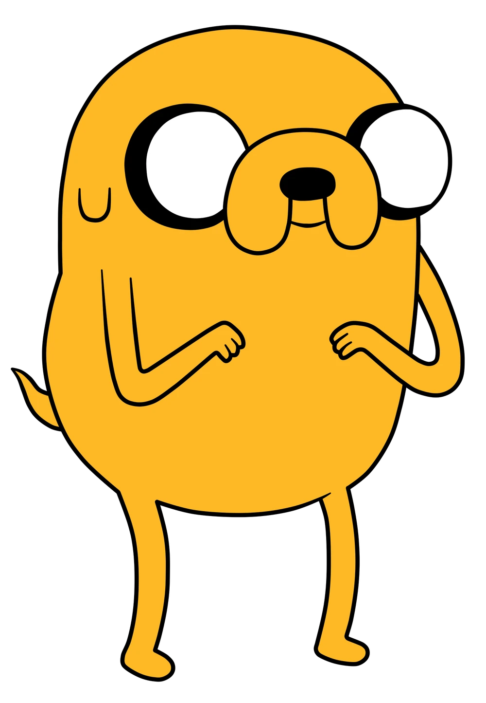

Datos personales
- Teléfono: 657483765
- Localidad: Tierra de Ooo
Redes sociales
- Instagram: @jakeelperro
- Twitter: @jakeelperro
Habilidades
- Poderes elásticos
- Sentido del olfato
- Imaginación
- Experto musical
JAKE EL PERRO
Quién soy
Soy un personaje de la serie Hora de aventuras. La serie sigue las aventuras de Finn, un niño (va creciendo con la serie desde los 12 al principio hasta los 17 a la actualidad), y yo, un perro con poderes mágicos con los que puedo cambiar de forma, crecer y encoger a voluntad, habitamos en la post-apocalíptica Tierra de Ooo.
Sobre mi
Tengo 34 años, soy mitad perro, mitad criatura venenosa. Soy hijo adoptivo de Joshua y Margaret. Soy un Bulldog de color mostaza con ojos grandes y tengo poderes elasticos. Puedo transformarme en todo tipo de formas fantásticas.
Experiencia
Desde el inicio de Hora de Aventuras , he aparecido en varias series de cómics, videojuegos y otras mercancías. Mi primera aparición fue en un juego de consola como un personaje jugable en Adventure Time: Hey Ice King! ¡¡¿Por qué robaste nuestra basura?!! , que se lanzó para Nintendo DS y 3DS en 2012. Posteriormente, fui un personaje jugable en Adventure Time: ¡Explora la mazmorra porque no lo sé! (2013), Hora de aventuras: El secreto del reino sin nombre (2014) y Hora de aventuras: Piratas del Enchiridion (2018).